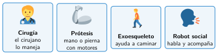

Robots en medicina y robots sociales
🤔 Pienso5 min
Qué hago aquí: Piensa un momento y contesta con lo que ya sabes. No pasa nada si no lo sabes: es para empezar.
¿Te dejarías operar por un robot? Escribe sí o no y por qué. Al final volverás a contestar.
📖 Leo y aprendo20 min
Qué hago aquí: Lee despacio, mira los dibujos y los ejemplos, y quédate con la idea clave del final.
En los hospitales hay cada vez más robots.

Un robot social está hecho para relacionarse con las personas. Habla, reconoce caras y pone «caras» con luces. Se usan para acompañar a personas mayores o recibir visitas en un museo.
✏️ Hago20 min
Qué hago aquí: Haz las actividades en orden. Empieza siempre por las básicas.
Escribe dos robots que se usen en medicina.
¿Para qué sirve un exoesqueleto?
Un robot social saluda a cada persona por su nombre. ¿Qué sensor necesita?
¿Puede un robot social sustituir a la visita de un familiar? Da tu opinión con un argumento.
✏️ Puedes responder escribiendo, con un dibujo o un esquema, o contándolo en voz alta.
🚀 Amplío (si quieres saber más)
Qué hago aquí: ¿Has terminado? Lee la curiosidad o elige el reto. Es voluntario.
Dibuja el esquema de una prótesis de mano: entrada, controlador y salida.
✅ Compruebo5 min
Qué hago aquí: Contesta sin mirar la ficha y marca cómo lo llevas.